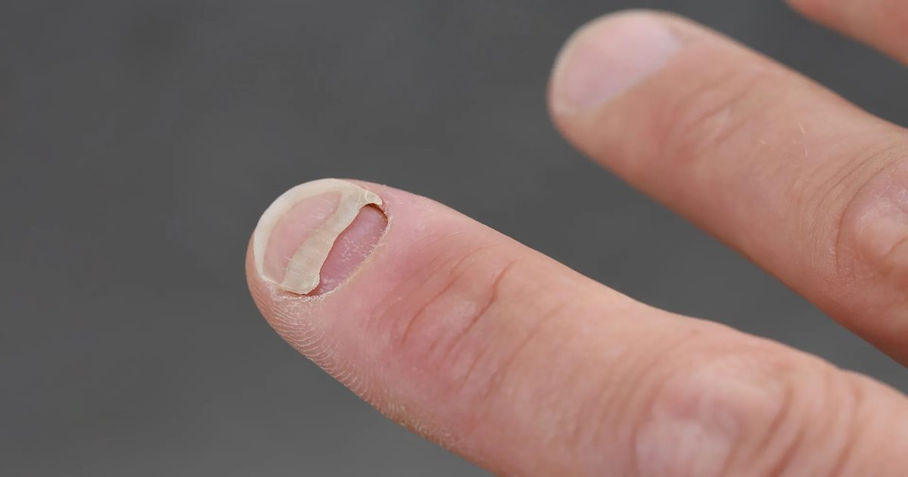

Популярные препараты для похудения, связанные с неожиданной проблемой ногтей
Популярные препараты для похудения GLP-1, такие как Ozempic и Wegovy, связаны с неожиданно высокими показателями отслоения ногтей, выпадения волос и воспаления кожи головы, причем некоторые проблемы возникают в несколько раз чаще среди пользователей.
Исследователи обнаружили, что потеря веса сама по себе не может полностью объяснить различия, предполагая, что эти упущенные симптомы могут быть больше.